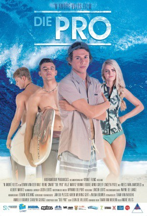

#9199 Perfect Wave - Mit Dir auf einer Welle
Alternativ: Die Pro
 
 IMDB-Wertung: 7.1 / 10
IMDB-Wertung: 7.1 / 10  Metascore: 0
Metascore: 0 
DIE PRO ("The Pro") tells the story of a young surfer, Tiaan Nothnagel, that has to come to terms with the accidental death of his best friend, Dirkie Lawrence, just before their last year at school. After Dirkie's death, Tiaan swears off surfing for good, as he can't stand to be reminded of everything that he and Dirkie shared. But then, Dirkie's twin sister (who went to live with their dad after their parents split up the previous year) arrives in town on a mission of her own: to be selected to go on Wave-Seekers, a fictional World Surf Tour and something that Tiaan and Dirkie dreamt of doing themselves. But for her to succeed, she needs Tiaan's help, and by implication, she needs him to get back on his surfboard...
Jahr: 2015
Dauer: 98 Minuten
FSK: 12
Land: Süd-Afrika Studio: Tiberius FilmTonspuren: DTS - ,
Untertitel: Deutsch,
Auflösung: 1080p (1920x800) Größe: 6881 MB
Genre: Drama
Regisseur: Andre Velts
Drehbuch: Clifford Odets
Soundtrack: Wynand Delport
Darsteller:
- Reine Swart als Yvette Lawrence
- Zakeeya Patel als Jasmine Farat
- Morné du Toit als Peet
- Kaz McFadden als Surf Commentator
- Edwin van der Walt als Tiaan Nothnagel
- Vilje Maritz als Dirkie Lawrence
- Arno Greeff als Dustin Jackson
- Bennie Fourie als Hermann
- Albert Maritz als Kruiwa / Mr Cruywagen
- Neels van Jaarsveld als Geyer
- Marcel van Heerden als Ed Nothnagel
- Hélène Truter als Elize Nothnagel
- Dorette Potgieter als Lorraine Lawrence
- Juanita de Villiers als Mrs. Beukes
- Caleb Louw als Louis
- Phillip Henn als Headmaster
Datei: X:\2015(N-Z)\Perfect Wave - Mit Dir auf einer Welle (2015, FSK12, 1920x800).mkv seit 19.07.2018
Festplatte: HD 2015(A-Z)
 Es gibt insgesamt 161 Filme in der Gruppe '2015(N-Z)'
Es gibt insgesamt 161 Filme in der Gruppe '2015(N-Z)'